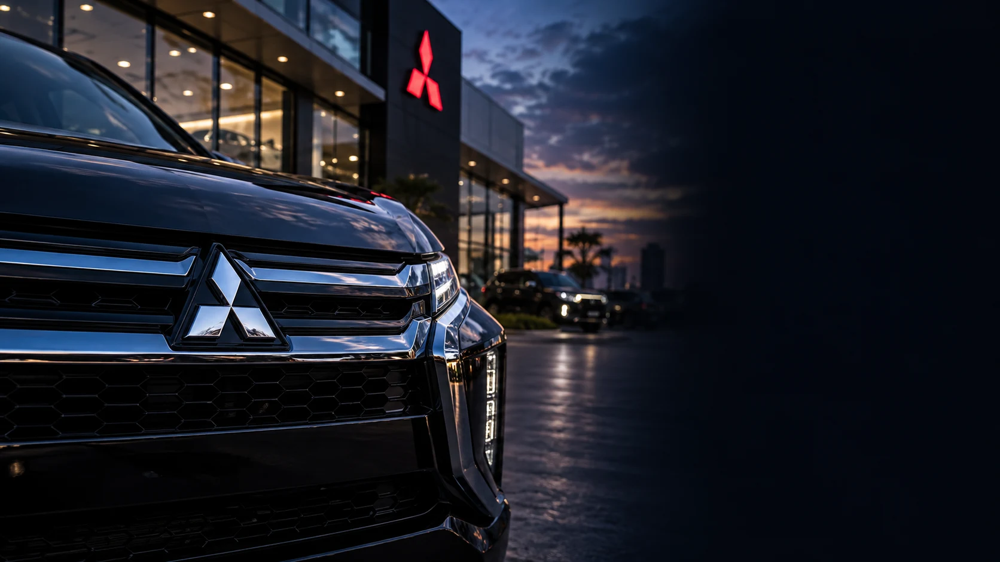

Separate sources of data
Campaign and website activity sat apart from dealer sales records.
Case study / Mitsubishi Motors Vietnam
DSQUARE helped Mitsubishi Motors Vietnam connect marketing, dealer sales and after-sales through a customer data integration programme.
Customer Experience & CRMDigital Solutions & Innovation
Explore the case*Network scale stated in the project brief. These figures describe the business context, not system adoption or performance results.
The challenge
Marketing, dealerships and service teams handled different parts of the same customer relationship. Their tools did not share a complete, up-to-date customer record.
For MMV, the task was to connect those records and the people using them, across a network of more than 50 dealers.
Campaign and website activity sat apart from dealer sales records.
HQ and dealers lacked a shared workflow from lead generation to after-sales.
Scattered data made it harder to segment customers and plan relevant follow-up.
The approach
The integration strategy links CRM, dealer tools and customer apps with MMV’s core systems. Sales and service teams can work from the same customer context as the relationship develops.
From campaign response to dealer follow-up, vehicle delivery and service booking.
The customer journey
A practical view of the workflows covered in the integration strategy.
Capture interest from campaigns and the website.
Lead managementShare the lead and follow-up record with the sales team.
CRM + dealer appManage test drives and the next customer conversation.
Dealer appKeep the sales record through vehicle delivery.
CRM + dealer appGive owners a place to book their next service.
Customer appSupport points, tier rewards and personalised offers.
Loyalty + CDPThe ecosystem
CRM manages the relationship. The CDP brings behavioural data into segmentation and campaign activation.
Leads, sales & service
Behaviour & segmentation
Integration API gateway & middleware connect DMS and ERP.
Reporting Data warehouse & Power BI support funnel and after-sales reporting.

Customer Experience & CRM
Let’s look at the handovers between your marketing, sales and service teams.
Talk to us